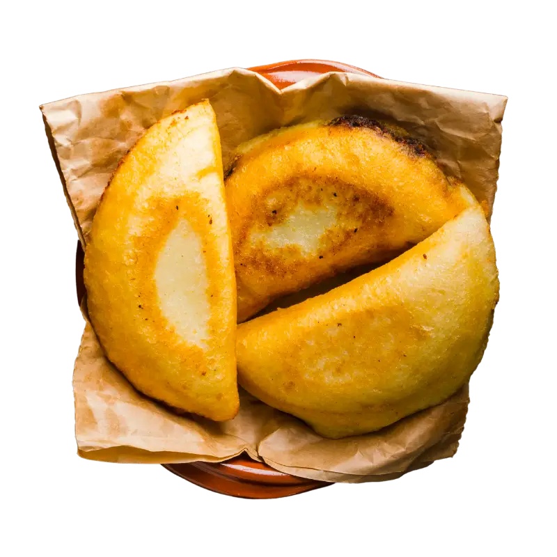

Empanadas De Queso

Description
The Venezuelan Arepa is made using corn flour dough filled with anything you want.
They are different from other empanadas that are flakier
Ingredients
- Arina Pan (corn flour)
- Large Tupperware/Bowl
- Salt
- Sugar
- Queso Fresco (White Shredded Cheese)
- Oil
Steps
- Fill a large Tupperware or Bowl 3 quarters of the way with water
- Pour corn flour until it is up past the water
- Add salt and a little bit of sugar
- Mix the flour until it is doughy and holds a shape on its own
- roll dough into a ball and flatten it into as even a circle as you can onto a gallon ziploc bag or empanada folder
- smear butter on dough and drop a small mound of cheese on the center
- Use the ziploc bag to fold the flat circle in half any direction
- use a cereal bowl to cut out the curved shape of the empanada through the bag
- Fry in a pan with oil high enough to cover half of each side of the empanada
- Cook evenly and let cool